Макет для обсуждения
Вариант 1: как каталог роботов
Вариант 2
Российские комплектующие из таблицы коллег: только позиции с фото
Робопортал Москвы

Правительство
Москвы
Главная
Роботы
Испытания
Гранты и кредиты
Комплектующие
Аналитика
Личный кабинет
Комплектующие
Комплектующие для роботов
Сортировка
По умолчанию
По названию
По производителю
Характеристики
Как купить
Сайт производителя ↗
Получить консультацию →
×
Заявка
Добавить комплектующие
Позиция
Категория
Двигатели и сервоприводы
Системы управления и обработки данных
Сенсоры и средства связи
Электропитание
Программное обеспечение
Компания
ИНН
Контактное лицо
Телефон или почта
Доля российских комплектующих, %
Комментарий
Это макет: заявка никуда не отправляется.
Отправить
Отменить
Готово. В рабочей версии заявка уйдет на i.moscow.